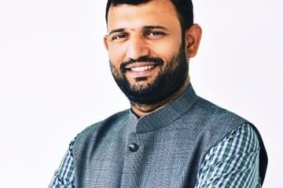
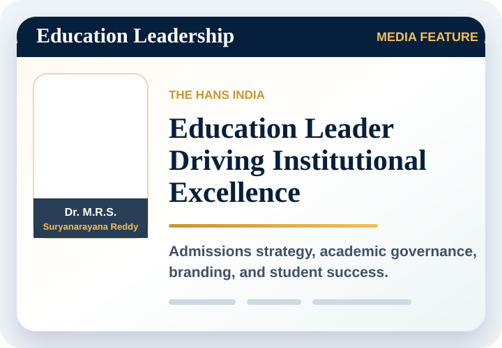

Education Leader | Strategist | Speaker
Dr. M. R. S. Suryanarayana Reddy
- Admissions Strategist
- Brand Building Expert
- Academic Leader
- Speaker & Researcher


Featured Interview
MBA or PGDM?
Admissions and placement insights
Watch
About Me
Passionate about education. Committed to impact.
With over 18 years of experience in higher education, Dr. Reddy specializes in admissions strategy, institutional branding, digital transformation, and academic leadership. He has helped institutions unlock their potential, attract the right students, and build a stronger future-ready brand.
Know More About MeExperience
Progressive roles across teaching, training, branding, admissions, and institutional growth.
Assistant Professor
Training Officer & Assistant Professor
Dean - Entrepreneur Leadership & Brand Building
Associate Professor & Dean - Admissions & Brand Building
Professor & Director - Admissions
Awards & Recognitions
View All
Telangana Best Business School Director - Admissions
2025 | HMTV
Emerging Leader in Higher Education
2025 | EK Updesh Media
Most Innovative Marketing Strategy Award
2024 | College Dunia
Distinguished Faculty in Human Resources
2024 | Ambitions Awards
Institutional Branding Excellence
Draft recognition | Details to confirm
Admissions Innovation Leadership
Draft recognition | Details to confirm
Interviews & Media
View All
 BBA Course Details & Career Opportunities
BBA Course Details & Career Opportunities
 BS Computer Science vs B.Tech CSE
BS Computer Science vs B.Tech CSE
 PGDM or MBA: Choosing the Right Programme
PGDM or MBA: Choosing the Right Programme
 Higher Education Leadership Discussion
Higher Education Leadership Discussion
 Admissions and Student Guidance
Admissions and Student Guidance
 Education Strategy Interview
Education Strategy Interview
 Institutional Growth Conversation
Institutional Growth Conversation
 MBA and PGDM Admissions Insights
MBA and PGDM Admissions Insights
 Career Direction and Student Success
Career Direction and Student Success
 The Future of Higher Education
The Future of Higher Education
 Academic Leadership and Branding
Academic Leadership and Branding
 Higher Education Interview
Higher Education Interview
Academic Milestones
View AllMinistry of Education | MBU, 2021 - 2024
Management Studies, three engineering colleges
KG Reddy College of Engineering & Technology
Institution Innovation Ambassador, MHRD
AP State Skill Development Corporation
Two international conferences
Latest Blogs
View All-
The Future of Higher Education: Trends Shaping 2030 and Beyond May 10, 2025
-

MBA vs PGDM: Which is the Right Choice for You? April 27, 2025 -
How Institutions Can Build a Strong Admissions Funnel April 05, 2025
-

AI in Education: Opportunities for Universities March 15, 2025
Paper Publications
View All-
Paper
Impact of Talent Management on Organizational Performance Scopus | Journal of Positive School Psychology
-
Paper
Workplace Expectations of Gen-Z: An Empirical Study Published research
-
Paper
Hybridizing Technology & Knowledge Management Scopus | WoS
-
Paper
Employee Perceptions about HRD Climate National Conference Proceedings
Workshops Attended
View All-
May
Courageous Principals Leadership Training Program Deloitte University, Hyderabad | May 2024
-
Nov
Faculty Development Program on Digital Marketing Infosys, Mysore | Nov 2024
-
Apr
Research Methods and Data Analysis IIM Bodh Gaya | Apr 2021
-
Dec
Multivariate Data Analysis for Advanced Research AICTE FDP, Bhubaneswar | Dec 2017
Testimonials
What Education Leaders Say
Perspectives from academic leaders and collaborators across admissions, branding, and institutional growth.

Dr. Reddy brought discipline and clarity to the admissions roadmap. His structured approach connected brand strategy, enquiry quality, and conversion in a way the leadership team could execute with confidence.
CBIT Principal
Academic Leadership Partner
Admissions strategy, brand positioning, and institutional growth

KG Reddy Principal
Academic Leadership Partner
"A clear, practical partner for shaping the admissions journey, institutional positioning, and team-wide focus."

Dr. Nagesh
MBA HOD
"His counsel made it easier to communicate programme value and create a stronger experience for prospective students."
IARE Principal
Academic Leadership Partner
"A strategic education leader who brings visibility, growth, and academic purpose into one actionable plan."
Education leadership network
Looking to improve admissions, branding, and institutional growth?
Book a ConsultationLet's Connect
Invite Dr. Reddy for speaking engagements, academic collaborations, and institutional growth initiatives.
- Email meetsuryamule@gmail.com
- Phone +91 96520 06074
- City Hyderabad, India
- LinkedIn Dr. M.R.S. Suryanarayana Reddy